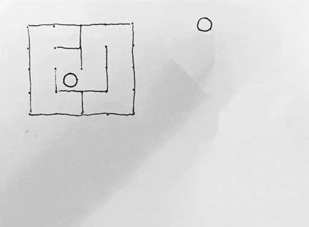

Viðfangsefni: Völundarhús og pathfinding : Graph traversal
Tilviljanakennd umhverfi hafa verið notuð í tölvuleikjum síðan Beneath Apple Manor kom á markaðinn 1978. Þau hafa verið sérstaklega vinsæl á síðustu árum í leikjum eins og Minecraft, svo ekki sé minnst á heilan flokk leikja sem eru kallaðir „Roguelike“ — sem er tilvísun í leikinn Rogue frá 1980. Ég er einn þeirra sem hef fundið mig knúinn til að spila þessi handahófskenndu ævintýri í leit að fjársjóðum og hættulegum skepnum til að vinna bug á. Þannig fannst mér það tilvalin hugmynd að skoða það hvernig þessi umhverfi eru sett saman. Reyndar byrjaði ég ekki á sjálfum umhverfunum, heldur fór ég að skoða það hvernig línur eru dregnar gegnum þau - ekki bara til að finna leiðir fyrir persónur leikjanna til að fylgja, heldur líka til að taka ákvarðanir um það hvernig þrautir gætu verið hannaðar tilviljanakennt til að vera leysanlegar. Svarið reyndist vera að umhverfi í slíkum leikjum eru táknuð sem gröf. Hver einasti punktur, sem gæti verið hnit í hnitakerfi eða jafnvel herbergi í byggingu (því að hugmyndin er ekki bundin við tiltekna útfærslu) er tengdur við einhverja aðra og þessar tengingar mynda saman þær leiðir sem hægt er að taka gegnum umhverfin. Þá er ein einfaldasta leiðin til að finna allar leiðir frá tilteknu hniti í grafinu að beita svokölluðu [breadth-first-search]. Eftirfarandi hreyfimynd sýnir hvernig farið er í gegnum tréð (og útskýrir nafnið, ef það var ekki skýrt þegar!).

Þá fór ég að hugsa um upprunalegu hugmyndinar mínar, sem tengdust því að búa til handahófskennd umhverfi, og sérstaklega fyrir tölvuleiki. Mér finnst völundarhús eiga vel við, svo ég bjó til [völundarhúsa-generator][maze]. Mér fannst mikilvægt að geta sýnt það skref fyrir skref hvað væri að gerast í öllu sem ég tók mér fyrir hendur, svo að ég útfærði reikniritin öll þannig að eitt skref væri eitt kall í sama fallið. Það vafðist svolítið fyrir mér að teikna völundarhúsið upp í canvas, en þegar grindin var komin reyndist það auðvelt að tengja við það slider fyrir stærð, play-fall og smá grafík (tekin frá [github:calref/cboe][cboe]) til að setja allt í ævintýralegt samhengi.
Ég var orðinn tæpur á tíma, en það var ennþá svo margt til að skoða! BFS notar queue fyrirbærið til að ákveða hvað á að skoða næst, en það er hægt að nota eitthvað sem heitir weighted queue með ákveðnum heuristics til að búa til gáfulegri pathfinding föll. Þannig kemst maður hjá því að skoða alveg jafn marga punkta til að komast að endanum. Innan völundarhúsa-generation er líka mjög margt áhugavert. Backtracking býr til löng og dálítið "klassísk" völundarhús sem bjóða bara upp á eina leið frá hverjum einum punkti að öðrum, en það er ekki það eina sem er í boði. Misjöfn stærð herbergja er klárlega eitthvað sem tengist beint inn í tölvuleikjagerð og ég hef áhuga á að kanna það nánar í framtíðinni.
Til að tengja þetta tvennt saman þá ákvað ég að útfæra völundarhúsa-generatorinn sem module og gerði smávegis breytingar á [BFS forritinu][bfs-maze] til að það gæti skoðað gröfin sem að hún spýtir út. Það er sérstaklega gaman að fylgjast með því þegar byrjunarpunkturinn lendir í miðjunni á völundarhúsi sem hefur margar langar leiðir.
Heimildir: